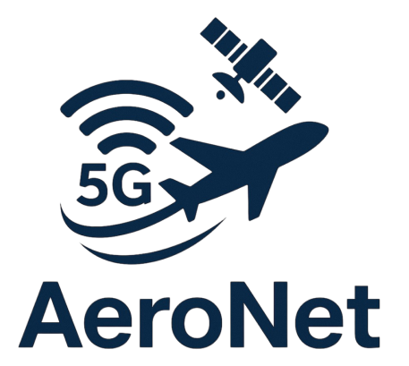

AeroNet Officially Launched!
The AeroNet project officially started on October 1, 2025. The first meeting with all participating organisations took place on October 27 via Microsoft Teams. The project brings together academic, industrial, and research partners across Europe to advance TN/NTN integration for reliable and sustainable connectivity.
During the kickoff meeting, the consortium outlined the project objectives, work packages, and collaboration framework. The next physical meeting is planned for Q1 2026 to initiate joint technical activities.
← Back to News